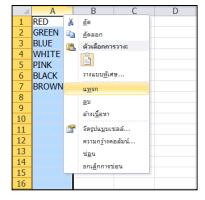
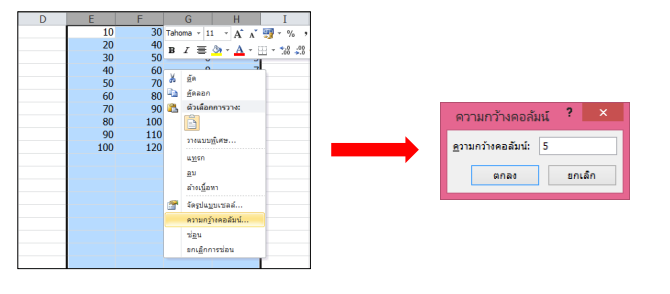

การแทรกคอลัมน์ทั้ง Column และ Row
คลิกขวาที คอลัมน์ที เราต้องการเพิ่ม เลือก Insert จากนั!นจะพบว่าจะมี Column เพิ่มขึ้นมาด้านหน้าของ column ที เราเลือก ถ้าเป็นการเพิ่ม Row ก็ให้คลิกที ด้านขวาของ Row

คลิกขวาที เซลล์ > เลือกแทรก > เลือกส่วนที ต้องการแทรก
